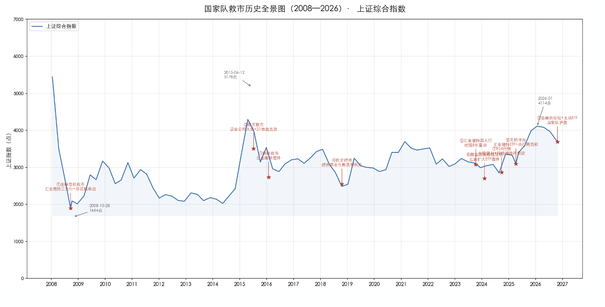
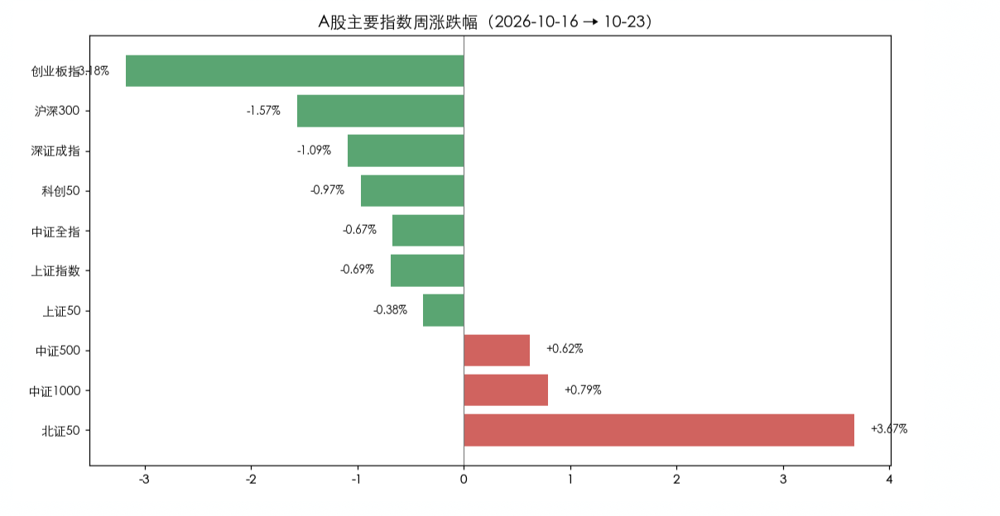
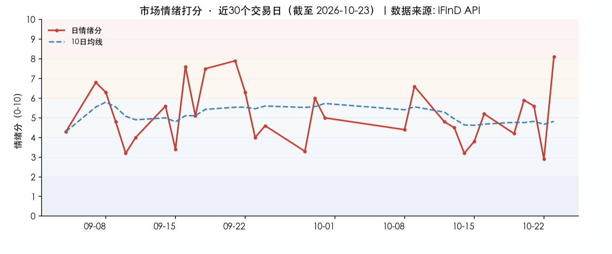
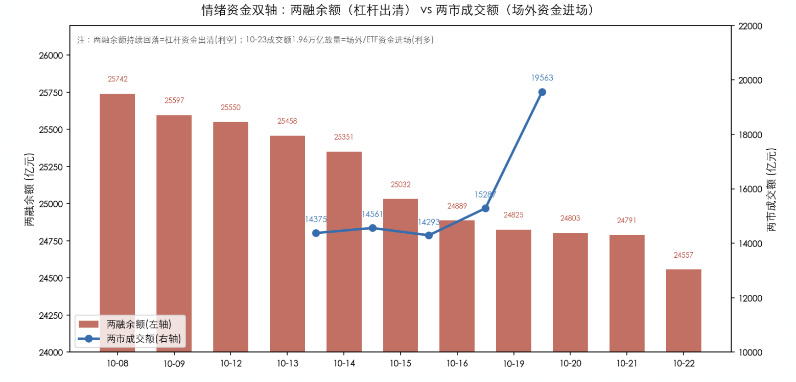
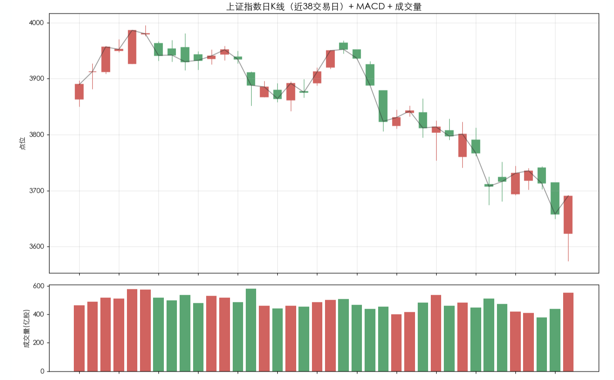

投资备忘20261025-老队伍遇到新问题
2026-10-19 — 2026-10-25 · W43 · 周度备忘
本周市场是真人版"绝地求生"，在周四、周五一早的一片绝望声中完成了反弹。上周曾经提到如果在 3750 以下不能快速修复，就会演变成快速的下跌——果然没过太久，本周前三个交易日尝试反抗未果，周四心态就崩了，止损盘和融资盘一起"大逃亡"，周五上午砍到主动脉，演变成快速、有力度的下跌，指数从平台下跌 200 点后迎来了破位后的第一轮反弹。市场能坚持到周四才跌，当然要感谢国家～～队，但当前老队伍碰到了新问题。
话题：平准基金——老队伍遇到新问题
时点。复盘 2008 年以来的 9 次救市，均出现在指数自高点回撤 20%~60%、市场情绪冰点、流动性或质押链条濒临断裂之际；救市后 3~6 个月多数出现显著反弹。
救助方式：工具与主体的两条演进线。
工具——从「买个股」到「买 ETF」再到「央行注资」：2008 增持三大行 → 2015 证金买蓝筹/ETF → 2023 起汇金主买宽基 ETF → 2024-09 起央行互换便利/再贷款直接注资。
主体——从「单一汇金」到「多路国家队协同」：汇金、证金、社保、诚通、中证金融资管、外管局平台合计持股市值约 4 万亿元，形成体系化稳定器。
| 阶段 | 主要主体 | 主要方式 | 标志事件 |
|---|---|---|---|
| 2003-2014 | 中央汇金 | 增持银行/权重股 | 2008 汇金增持三大行 |
| 2015-2018 | 证金公司、汇金、21 券商 | 买入蓝筹/ETF、暂停 IPO、两融规则 | 2015 证金入市 |
| 2019-2023 | 汇金、社保、地方国资 | 增持四大行、纾困基金 | 2023 汇金重启增持 |
| 2024-至今 | 汇金、证金、社保、诚通、央行 | 增持宽基 ETF + 央行互换便利/再贷款 | 2024-09 / 2025-04 |
新问题有三：频率、结构市、退出。
频率明显增加了。但是这种事情一鼓作气、再而衰、三而竭，三天两头救市只能说明市场总是需要你——这样你喊话或者不喊话的边际效应都会减弱，除非……你可以一直买。
结构市让救市的效果变形。从疫情之后、特别是 924 之后的市场一直是结构市：科技股的牛市带来的却是很多股票接近历史低位，主要包括周期工业、新能源和消费，都处在极低的位置。这种情况下救市通过 ETF 的买入，体现出来的是低位资产和蓝筹有新增资金、而科技资产大幅流出——这时候就出现 7、8 月份的情况：队伍钱也花了，投资者情绪并没有变好。
退出。当参与主体增加，就涉及主体决策和资金限制，很难一直、持续、海量地买入，否则只会变成"无脸男"式的怪兽，最终崩溃；一旦有退出就涉及怎么退、何时退——如果你有答案，也意味着市场自实现；退出也意味着上涨区间被框定。
当然这些问题，老队伍里的老师肯定都考虑过，不然他们为什么每天工作半小时呢？

本周市场：V 型反转
本周 A 股先抑后扬、周五 V 型反转：上证周跌 -0.69% 收 3690.48，周中一度跌破 3674 前低至 3574.27（10-23 盘中低点），周五放量长阳收复失地。结构剧烈分化——大盘蓝筹普跌（沪深 300 -1.57%、创业板指 -3.18%），而小盘成长逆势上涨（中证 1000 +0.79%、北证 50 +3.67%）。港股显著弱于 A 股：恒指周跌 -4.52%、恒生科技 -5.76%，受美股「黑色星期四」（纳指 -2.60%、费半 -6.72%）与 Meta C 类股融资引发的 AI 交易恐慌双重压制，人民币升值未能对冲。
本周市场经历「高位滞涨 → 放量破位 → 情绪冰点 → V 型反转」的完整轮回：周一惯性冲高后连续三日回落，周四 AI 硬件链「利好落地」大幅补跌引发放量破位（跌破 3674 前低），情绪降至 2.9（偏冷）；周五在跌幅较大的反弹需求、国家队 ETF 盘中护盘、机器人/计算机题材爆发的三重共振下，低开高走放量 1.96 万亿，创业板指单日 +4.16% 领涨，完成超跌反弹第一根放量长阳。

主线切换至「机器人+计算机」：申万计算机 +5.53%、机械设备 +5.03% 领涨全市场，取代前期的 AI 硬件链成为新主线；而 AI 硬件（光模块/半导体）本周遭遇「利好落地」补跌，通信 -2.00%、电子涨幅收窄至 +1.06%。煤炭 -3.04%、房地产 -3.19% 领跌，反映内需疲弱（社零 1.1%、地产投资 -20.6%）压制顺周期/红利，资金持续从防御切向进攻题材。
市场展望
宏观：在 A 股风险释放后，海外的风险大于国内市场的风险，所以 H 股的反弹偏弱；国内的政策至少要到下个月后半段对经济工作会议的预期，而且预期估计也会比较弱。
市场资金 & 情绪：两融的余额逐步回到年初的水平，去杠杆的风险得到较大的释放，边际上推动了短期的反弹；同时 18 支主动 ETF 的发行带来部分增量资金和情绪改善。短期情绪有改善但仍然处在较低的水平。意味着从资金和情绪上看：资金面改善、情绪仍然在低位，"跌多了"的反弹有一定的持续性。

市场情绪：10-23 当日情绪飙升至 8.1（亢奋/过热），为近一个月最高，反映周五 V 型反转的爆发力；但近两周（5.3）与近一月（5.4）均值仍处中性，说明本轮反弹尚属超跌修复初期，情绪中枢尚未趋势性抬升，反弹的持续性有待量能与赚钱效应的二次确认。

模式识别（中期）：组合当前确认处在 2022 年 4 月、2024 年初破位下跌的态势中，是否能在破位 10% 附近修复是下一步中期观察的重点。现在看 2022 年 4 月的情况可能是当前市场最好的结果——破位后，市场跌出空间、资金逐步平衡，通过时间逐步修复 K 线至平台以上，特点是小步慢走；2024 年初则是破位后在底部磨蹭的时间太久，指数顺势持续破位，直到出现真正的扭转局势变化。
模式识别（短期）：短期最值得关注的是长下影线—反弹，后续能不能快速拿下 3750 附近。磨蹭的时间太久很容易出现 2024 年的情况，再次向下测试；如果快速拿下，同样需要关注力度和持续性——在外围风险还没释放的情况下，多给 A 股一点时间。

组合备忘
Beta 组合上涨，表现明显跑赢市场（市场是指中证全 A -0.67%），Macro 组合上涨。本周市场下跌组合有绝对收益、和明显相对收益。Beta 策略本周上涨 **%；Macro 策略上涨 **%。组合仓位基本持平：Beta 策略仓位 80%，Macro 策略仓位 73%（其中转债 30%）。组合超额收益主要来自机器人和科技的反弹，短线交易同样增厚收益，资源股拖累组合。
本周操作：仓位周初下降，并在指数大幅破位后买回；结构上 HALO 仓位小幅下降、科技小幅增加。仓位上按照周初的计划，等待指数破位风险释放，仓位在这个过程中完成了先降后升；结构上主要是寻找弹性资产的短线交易。
下一步：保持交易思维、继续谨慎，着眼下一步的结构调整。重视风险并灵活交易——当前市场选择"灾后重建"是物理 AI 的方向，四季度传统炒作季，可能是炒作的方向对消费电子、SoC 和机器人有利。仓位上寻底阶段继续控制、灵活交易。
结构上：底部加仓的交易型资产利用反弹减仓、低位资产有超额收益减仓，HALO 资产保持稳定，增加明年的产业趋势方向。
研究：明年产业趋势、AI 资产、HALO 资产的聚焦。